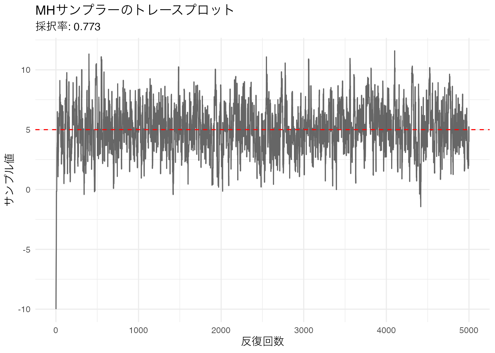
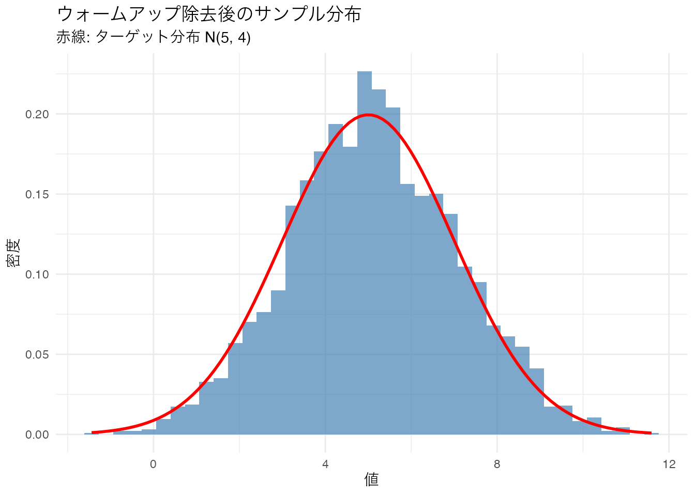
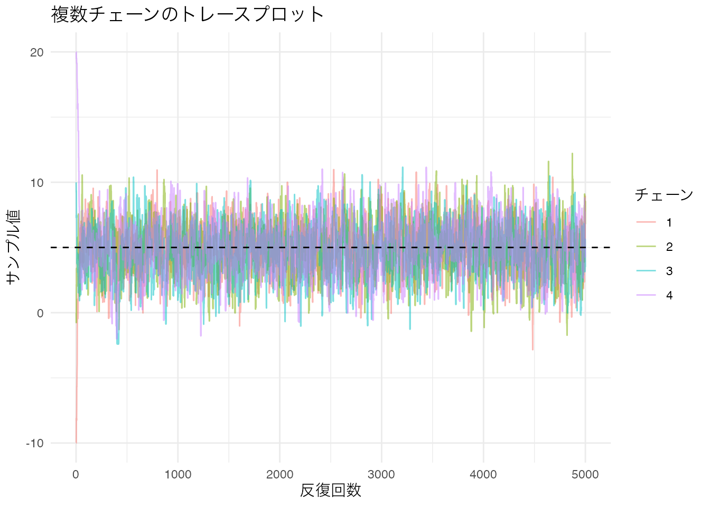
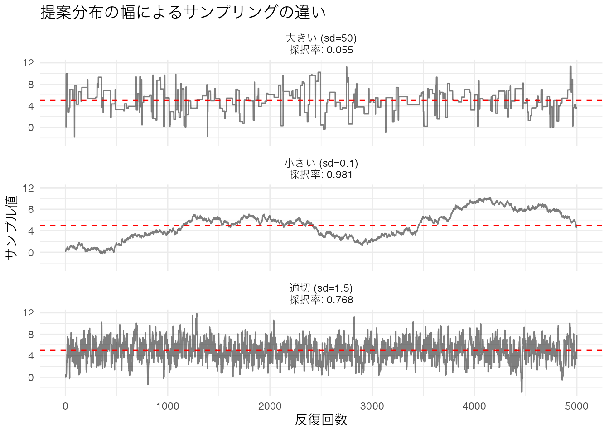
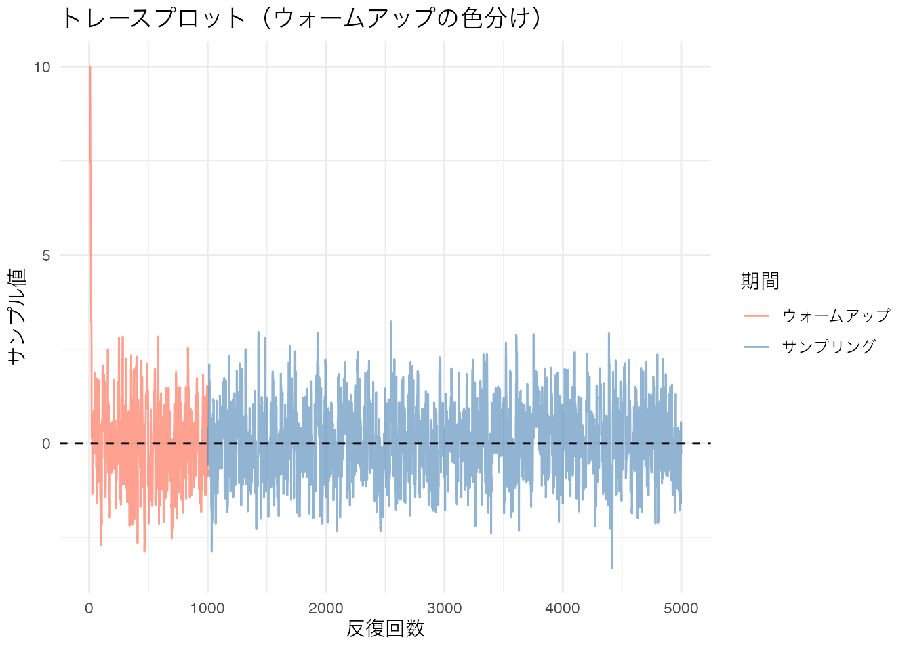
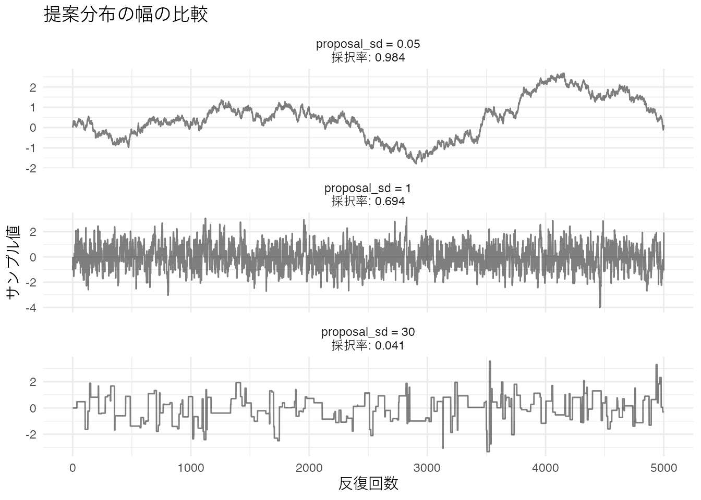
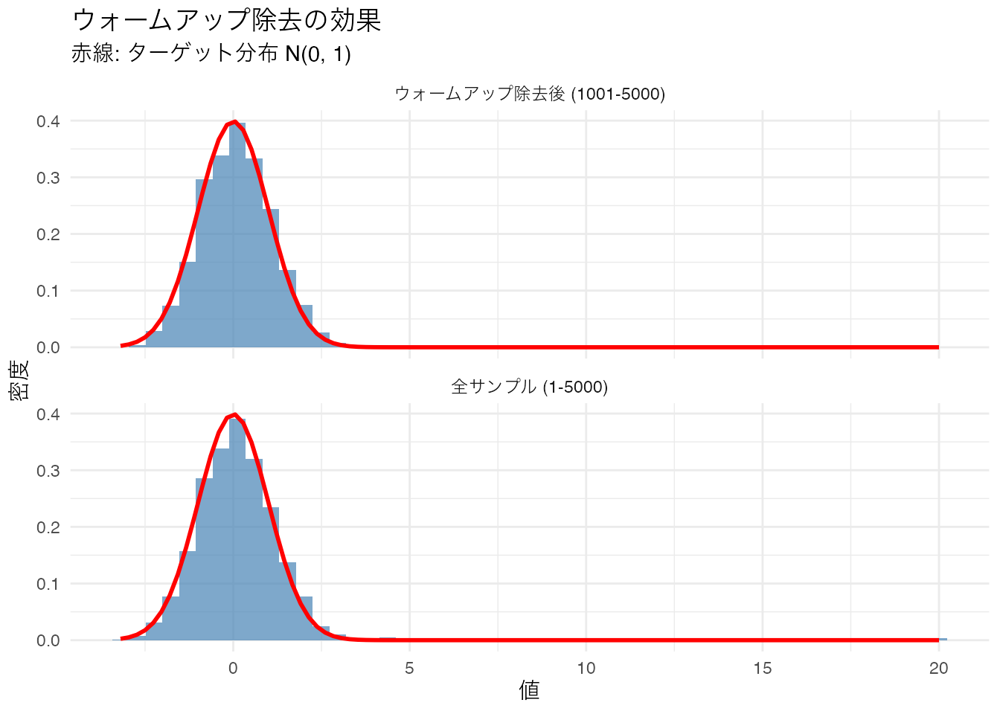
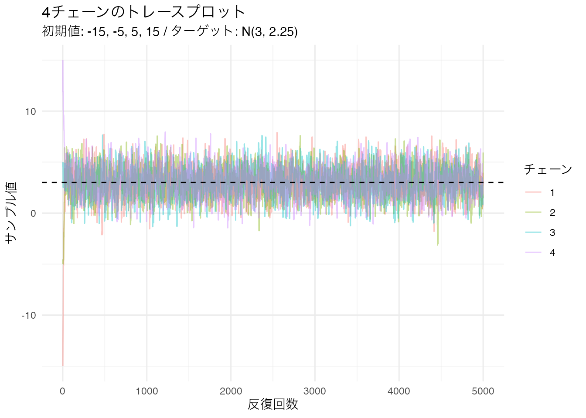
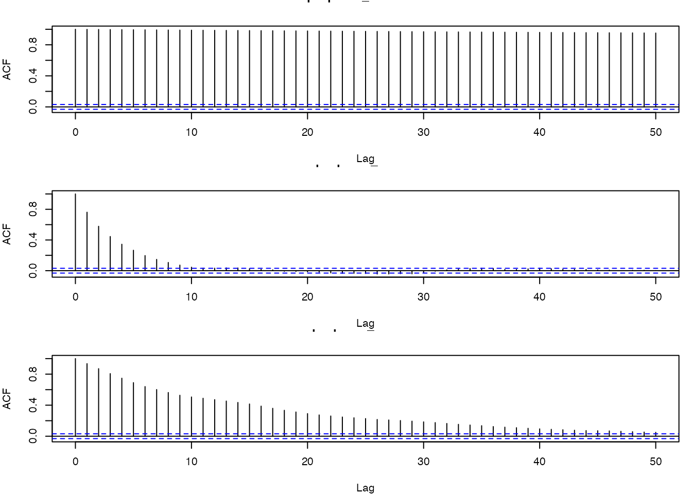

# Metropolis-Hastingsサンプラー
mh_sample <- function(n_iter, start, proposal_sd, target_mean, target_sd) {
samples <- numeric(n_iter)
samples[1] <- start
accept_count <- 0
for (i in 2:n_iter) {
# 提案分布から候補値を生成
proposal <- rnorm(1, mean = samples[i - 1], sd = proposal_sd)
# 採択率の計算（対称な提案分布なので尤度比のみ）
ratio <- dnorm(proposal, target_mean, target_sd) /
dnorm(samples[i - 1], target_mean, target_sd)
# 採択・棄却
if (runif(1) < ratio) {
samples[i] <- proposal
accept_count <- accept_count + 1
} else {
samples[i] <- samples[i - 1]
}
}
list(samples = samples, accept_rate = accept_count / (n_iter - 1))
}U18. MCMCの原理と実践
ユニット概要
| 項目 | 内容 |
|---|---|
| 分類 | 枝（選択） |
| 前提 | U17（ベイズ統計の基礎） |
| 次のユニット | U19（Stan / cmdstanr） |
| 使用データ | シミュレーションデータ |
| 学習目標 | MCMCの目的と原理を理解する / Metropolis-Hastingsアルゴリズムを自分で実装できる / ウォームアップ・複数チェーン・Rhat・ESSの意味を理解する / トレースプロットから収束を判断できる / cmdstanrの基本的なワークフローを知る |
事前知識
MCMCとは何か
U17で学んだように、ベイズ統計では事後分布 \(p(\theta | D) \propto p(D | \theta) \, p(\theta)\) を求めることが目標です。しかし、パラメータが多い場合やモデルが複雑な場合、事後分布を解析的に（数式で）求めることはできません。
そこで用いられるのが MCMC（Markov Chain Monte Carlo） です。MCMCは事後分布から直接サンプルを生成する手法であり、十分な数のサンプルが得られれば、そのサンプルの分布が事後分布を近似します。
名前に含まれる2つの要素を確認しておきましょう。
- マルコフ連鎖（Markov Chain）: 次の状態が現在の状態だけに依存する確率過程です。MCMCでは、現在のパラメータ値から次の候補を生成し、採択するかどうかを確率的に決めます
- モンテカルロ法（Monte Carlo）: 乱数を使って数値的に近似する方法の総称です。事後分布の期待値や信用区間を、サンプルの平均や分位点で近似します
Metropolis-Hastingsアルゴリズム
MCMCの最も基本的なアルゴリズムが Metropolis-Hastings（MH）法 です。手順は次の通りです。
- 初期値 \(\theta_0\) を決める
- 現在の値 \(\theta_t\) から、提案分布（proposal distribution） に従って候補値 \(\theta^*\) を生成する
- 採択率（acceptance ratio） \(r\) を計算する
\[ r = \frac{p(\theta^* | D)}{p(\theta_t | D)} = \frac{p(D | \theta^*) \, p(\theta^*)}{p(D | \theta_t) \, p(\theta_t)} \]
- \(r \geq 1\) なら \(\theta^*\) を採択する（より良い場所なら必ず移動）
- \(r < 1\) なら確率 \(r\) で \(\theta^*\) を採択する（悪い場所でも一定確率で移動）
- 採択されなかった場合は \(\theta_{t+1} = \theta_t\)（その場に留まる）
- ステップ2に戻り、十分な回数繰り返す
このアルゴリズムの核心は、事後分布の密度が高い領域を多く訪問するようにサンプルが生成される という点にあります。
Rによる実装
正規分布 \(N(\mu, \sigma^2)\) をターゲット分布として、MHサンプラーを実装してみましょう。提案分布には、現在の値を中心とした正規分布 \(N(\theta_t, \sigma_{\text{prop}}^2)\) を使います。
トレースプロットの確認
実際に動かしてみましょう。ターゲット分布を \(N(5, 2^2)\) として、初期値を \(-10\) から始めます。
set.seed(42)
result <- mh_sample(n_iter = 5000, start = -10,
proposal_sd = 1.5, target_mean = 5, target_sd = 2)
# トレースプロット
tibble(iteration = 1:5000, value = result$samples) %>%
ggplot(aes(x = iteration, y = value)) +
geom_line(alpha = 0.6) +
geom_hline(yintercept = 5, color = "red", linetype = "dashed") +
labs(title = "MHサンプラーのトレースプロット",
subtitle = paste0("採択率: ", round(result$accept_rate, 3)),
x = "反復回数", y = "サンプル値") +
theme_minimal()
初期値 \(-10\) から始まっているため、最初の数百回は真の値（赤い破線）に到達するまでの過渡期になっています。この部分を ウォームアップ（warm-up） または バーンイン（burn-in） と呼びます。
ウォームアップ（バーンイン）
初期値は任意に設定するため、最初のサンプルはターゲット分布を代表していません。この影響を除去するために、最初の一定期間のサンプルを捨てます。これがウォームアップです。
# ウォームアップを除去（最初の1000サンプルを破棄）
warmup <- 1000
post_warmup <- result$samples[(warmup + 1):5000]
# ウォームアップ除去後のヒストグラムと理論分布の比較
tibble(value = post_warmup) %>%
ggplot(aes(x = value)) +
geom_histogram(aes(y = after_stat(density)), bins = 40,
fill = "steelblue", alpha = 0.7) +
stat_function(fun = dnorm, args = list(mean = 5, sd = 2),
color = "red", linewidth = 1) +
labs(title = "ウォームアップ除去後のサンプル分布",
subtitle = "赤線: ターゲット分布 N(5, 4)",
x = "値", y = "密度") +
theme_minimal()
ウォームアップを除去した後のサンプルは、ターゲット分布をよく近似していることがわかります。
複数チェーン
初期値が1つだけでは、サンプラーが事後分布の一部しか探索できていない可能性があります。そこで、異なる初期値から複数の連鎖（chain）を独立に走らせ、全てが同じ分布に収束するかを確認します。
set.seed(123)
starts <- c(-10, 0, 10, 20) # 4つの異なる初期値
chains <- purrr::map_dfr(seq_along(starts), function(ch) {
res <- mh_sample(n_iter = 5000, start = starts[ch],
proposal_sd = 1.5, target_mean = 5, target_sd = 2)
tibble(iteration = 1:5000, value = res$samples, chain = factor(ch))
})
# 4チェーンのトレースプロット
chains %>%
ggplot(aes(x = iteration, y = value, color = chain)) +
geom_line(alpha = 0.5) +
geom_hline(yintercept = 5, color = "black", linetype = "dashed") +
labs(title = "複数チェーンのトレースプロット",
x = "反復回数", y = "サンプル値", color = "チェーン") +
theme_minimal()
初期値がばらばらでも、ウォームアップ期間を過ぎると全てのチェーンが同じ領域を探索するようになります。このような状態を 収束（convergence） と呼びます。
Rhat（Gelman-Rubin統計量）
収束を数値的に評価する指標が Rhat（\(\hat{R}\)）です。Gelman-Rubin統計量とも呼ばれます。
直感的には、チェーン間の分散 と チェーン内の分散 の比を見ています。
- 収束していれば、どのチェーンも同じ分布からサンプリングしているはずなので、チェーン間の分散は小さい
- 収束していなければ、チェーンごとに異なる場所を探索しているため、チェーン間の分散が大きい
\[ \hat{R} = \sqrt{\frac{\hat{V}}{W}} \]
ここで \(W\) はチェーン内の分散の平均、\(\hat{V}\) はチェーン内分散とチェーン間分散の加重平均です。
判断基準: \(\hat{R} < 1.01\) で収束したと判断します（かつては \(< 1.1\) が使われていましたが、現在はより厳しい基準が推奨されています）。
ESS（有効サンプルサイズ）
MCMCサンプルは連続する値の間に 自己相関（autocorrelation） があります。前の値を基に次の値を提案するため、隣接するサンプルは独立ではありません。
ESS（Effective Sample Size; 有効サンプルサイズ） は、自己相関を考慮した「実質的に独立なサンプル数」を表します。例えば5000サンプルを生成しても、自己相関が強ければESSは数百程度に下がることもあります。
一般に、事後分布の要約（平均、分位点など）を安定的に推定するには ESS > 400 程度が目安とされます。
収束した良い例と悪い例の対比
提案分布の標準偏差 \(\sigma_{\text{prop}}\) の設定は、サンプラーの性能に大きく影響します。
set.seed(42)
# 小さすぎる提案分布（遅い探索）
res_small <- mh_sample(5000, start = 0, proposal_sd = 0.1,
target_mean = 5, target_sd = 2)
# 適切な提案分布
res_good <- mh_sample(5000, start = 0, proposal_sd = 1.5,
target_mean = 5, target_sd = 2)
# 大きすぎる提案分布（高い棄却率）
res_large <- mh_sample(5000, start = 0, proposal_sd = 50,
target_mean = 5, target_sd = 2)
bind_rows(
tibble(iteration = 1:5000, value = res_small$samples,
type = paste0("小さい (sd=0.1)\n採択率: ", round(res_small$accept_rate, 3))),
tibble(iteration = 1:5000, value = res_good$samples,
type = paste0("適切 (sd=1.5)\n採択率: ", round(res_good$accept_rate, 3))),
tibble(iteration = 1:5000, value = res_large$samples,
type = paste0("大きい (sd=50)\n採択率: ", round(res_large$accept_rate, 3)))
) %>%
ggplot(aes(x = iteration, y = value)) +
geom_line(alpha = 0.5) +
facet_wrap(~type, ncol = 1) +
geom_hline(yintercept = 5, color = "red", linetype = "dashed") +
labs(title = "提案分布の幅によるサンプリングの違い",
x = "反復回数", y = "サンプル値") +
theme_minimal()
- 小さすぎる場合: 採択率は高いが、少しずつしか移動しないため探索が遅い（自己相関が高い）
- 適切な場合: 適度に動き回り、効率よく事後分布を探索する
- 大きすぎる場合: 遠くの値を提案するため棄却が多く、同じ場所に留まり続ける
一般に、 採択率が20–50%程度 になる提案分布が効率的とされています。
cmdstanrによるMCMCの実行（参考）
実際の研究では、MHアルゴリズムを手で書くことはありません。Stan という確率的プログラミング言語と、そのRインターフェースである cmdstanr パッケージを使います。Stanは内部でHMC（Hamiltonian Monte Carlo）と呼ばれる、より高性能なMCMCアルゴリズムを使用しています。
U19で詳しく学びますが、典型的なワークフローは次のようになります。
# cmdstanrの読み込み
pacman::p_load(cmdstanr)
# Stanモデルのコンパイル
model <- cmdstan_model("model.stan")
# データの準備
dataSet <- list(N = 100, y = y)
# MCMCサンプリング
fit <- model$sample(
data = dataSet,
chains = 4, # 4本のチェーンを走らせる
parallel_chains = 4, # 並列実行
iter_warmup = 2000, # ウォームアップ 2000回
iter_sampling = 5000, # サンプリング 5000回
refresh = 0 # 途中経過の非表示
)
# 結果の表示（Rhat、ESSが自動的に表示される）
fit$summary()
# 事後分布のサンプルを取り出す（3次元配列: 反復 x チェーン x パラメータ）
draws <- fit$draws()cmdstanrの出力には、各パラメータについて以下の情報が含まれます。
- mean, median: 事後分布の代表値
- sd: 事後分布の標準偏差
- q5, q95: 90%信用区間
- rhat: Rhat（1.01未満で収束）
- ess_bulk, ess_tail: 有効サンプルサイズ（分布の中心部と裾部）
結果の可視化には bayesplot パッケージが便利です。
pacman::p_load(bayesplot)
# 事後分布の密度プロット
bayesplot::mcmc_areas(draws, pars = "mu")
# トレースプロット
bayesplot::mcmc_trace(draws, pars = "mu")事後分布の数値的な要約には bayestestR パッケージも有用です。
pacman::p_load(bayestestR)
# EAP（平均）、MAP（最頻値）、中央値、95% HDI
bayestestR::describe_posterior(draws,
centrality = c("mean", "median", "MAP"),
ci = 0.95, ci_method = "hdi", test = NULL
)ランクC: 基礎知識を確認しよう
18-C-1
MCMCの目的は、事後分布を解析的に求めることが困難な場合に、事後分布からのサンプルを生成して近似することである。
MCMCは事後分布を数式で求める代わりに、事後分布に従うサンプルを大量に生成します。そのサンプルのヒストグラムや要約統計量が、事後分布の近似になります。
18-C-2
ウォームアップ（バーンイン）期間のサンプルを破棄する理由として、最も適切なものはどれですか？
MCMCの初期値は任意に設定するため、最初のサンプルはターゲットの事後分布を代表していません。十分な反復の後にサンプラーが事後分布の領域に到達するので、初期の過渡期のサンプルを捨てることで、初期値の影響を除去します。
18-C-3
Rhat（\(\hat{R}\)）は、MCMCの収束を判断するための指標です。Rhatについて正しい記述はどれですか？
Rhatは複数のチェーン間の分散とチェーン内の分散の比に基づく指標です。全てのチェーンが同じ分布に収束していれば Rhat は1に近づきます。1.01未満であれば収束したと判断するのが現在の推奨基準です。
18-C-4
ESS（有効サンプルサイズ）が、実際に生成したサンプル数よりも小さくなる主な原因はどれですか？
MCMCでは、現在の値を基に次の値を提案するため、隣接するサンプルは独立ではありません。この自己相関のため、5000サンプルを生成しても、実質的に独立なサンプル数（ESS）はそれよりも少なくなります。
18-C-5
次のトレースプロットのうち、収束が良好であることを示すのはどちらですか？
全てのチェーンが同じ帯状の領域をランダムに行き来している（毛虫のような形状）
チェーンごとに異なる値の周辺に留まり、それぞれ別の場所を探索している
収束が良好なトレースプロットは、全てのチェーンが同じ帯状の領域を重なり合いながらランダムに行き来する「毛虫（hairy caterpillar）」のような形状になります。チェーンが異なる場所に留まっている場合は、収束していません。
18-C-6
MCMCでは通常、何本のチェーンを走らせますか？
Stanをはじめとする多くのMCMCソフトウェアでは、4本のチェーンがデフォルトです。4本あれば Rhat の計算が安定し、収束の判断に十分な情報が得られます。少なくとも2本は必要ですが、4本がバランスの良い標準設定とされています。
18-C-7
Metropolis-Hastingsアルゴリズムにおいて、提案された候補値が現在の値より事後確率が低い場合、その候補値はどうなりますか？
事後確率が低い候補値でも、採択率 \(r = p(\theta^*|D) / p(\theta_t|D)\) の確率で採択されます。この仕組みにより、サンプラーは事後分布の密度が低い領域も適度に探索し、分布の全体像を捉えることができます。もし常に棄却してしまうと、事後分布の裾の情報が失われてしまいます。
18-C-8
Metropolis-Hastingsアルゴリズムの提案分布の幅（標準偏差）について、採択率が高すぎる場合と低すぎる場合にそれぞれどのような問題が生じますか？
採択率が高すぎるのは提案分布の幅が小さすぎることを意味し、少しずつしか移動しないため探索が遅くなります（自己相関が高い）。採択率が低すぎるのは提案分布の幅が大きすぎることを意味し、遠くの値を提案するため棄却が多く、同じ場所に留まり続けます。一般に、採択率が20–50%程度になるのが効率的とされています。
ランクB: 実践スキルを磨こう
18-B-1
事前知識のセクションで示した mh_sample() 関数を使って、ターゲット分布 \(N(0, 1)\)（標準正規分布）から5000サンプルを生成しなさい。初期値は \(10\) とすること。生成されたサンプルの平均と標準偏差を確認し、理論値（平均0、標準偏差1）と比較しなさい（ウォームアップとして最初の1000サンプルを除去すること）。
set.seed(42)
result_b1 <- mh_sample(n_iter = 5000, start = 10,
proposal_sd = 1.0, target_mean = 0, target_sd = 1)
# ウォームアップ除去
post_warmup_b1 <- result_b1$samples[1001:5000]
# 理論値との比較
tibble(
指標 = c("平均", "標準偏差"),
理論値 = c(0, 1),
推定値 = c(mean(post_warmup_b1), sd(post_warmup_b1))
)# A tibble: 2 × 3
指標 理論値 推定値
<chr> <dbl> <dbl>
1 平均 0 0.0929
2 標準偏差 1 0.992 サンプル数が有限であるため、理論値と完全には一致しませんが、おおむね近い値が得られるはずです。
18-B-2
18-B-1で生成したサンプルについて、トレースプロットを描きなさい。初期値からターゲット分布の領域に移動する過渡期が確認できるかどうかを視覚的に判断しなさい。ウォームアップ期間（最初の1000サンプル）とサンプリング期間を色分けして表示すること。
tibble(
iteration = 1:5000,
value = result_b1$samples,
period = ifelse(1:5000 <= 1000, "ウォームアップ", "サンプリング")
) %>%
ggplot(aes(x = iteration, y = value, color = period)) +
geom_line(alpha = 0.6) +
geom_hline(yintercept = 0, color = "black", linetype = "dashed") +
scale_color_manual(values = c("ウォームアップ" = "tomato",
"サンプリング" = "steelblue")) +
labs(title = "トレースプロット（ウォームアップの色分け）",
x = "反復回数", y = "サンプル値", color = "期間") +
theme_minimal()
初期値10から始まり、最初の数百回で0付近に到達していることがわかります。ウォームアップ期間（赤）を除去した後のサンプリング期間（青）は、0を中心に安定して探索しています。
18-B-3
提案分布の標準偏差を \(\sigma_{\text{prop}} = 0.05\), \(1.0\), \(30.0\) の3通りに変えて、それぞれ5000サンプルを生成しなさい。トレースプロットを並べて表示し、採択率と探索の様子を比較しなさい。ターゲット分布は \(N(0, 1)\)、初期値は \(0\) とすること。
set.seed(42)
sds <- c(0.05, 1.0, 30.0)
comparison <- purrr::map_dfr(sds, function(s) {
res <- mh_sample(5000, start = 0, proposal_sd = s,
target_mean = 0, target_sd = 1)
tibble(
iteration = 1:5000,
value = res$samples,
setting = paste0("proposal_sd = ", s, "\n採択率: ", round(res$accept_rate, 3))
)
})
comparison %>%
ggplot(aes(x = iteration, y = value)) +
geom_line(alpha = 0.5) +
facet_wrap(~setting, ncol = 1, scales = "free_y") +
labs(title = "提案分布の幅の比較",
x = "反復回数", y = "サンプル値") +
theme_minimal()
- \(\sigma_{\text{prop}} = 0.05\): 採択率は非常に高いが、少しずつしか動かないため自己相関が高い
- \(\sigma_{\text{prop}} = 1.0\): 適度な採択率で、効率よく分布を探索している
- \(\sigma_{\text{prop}} = 30.0\): 採択率が非常に低く、同じ値が繰り返される（階段状のパターン）
18-B-4
ウォームアップの効果を確認するために、初期値 \(20\) から \(N(0, 1)\) をターゲットに5000サンプルを生成し、次の2つのヒストグラムを並べて描きなさい。
- 全サンプル（1–5000）のヒストグラム
- ウォームアップ除去後（1001–5000）のヒストグラム
それぞれにターゲット分布 \(N(0, 1)\) の理論曲線を重ねること。
set.seed(42)
result_b4 <- mh_sample(5000, start = 20, proposal_sd = 1.0,
target_mean = 0, target_sd = 1)
bind_rows(
tibble(value = result_b4$samples, type = "全サンプル (1-5000)"),
tibble(value = result_b4$samples[1001:5000], type = "ウォームアップ除去後 (1001-5000)")
) %>%
ggplot(aes(x = value)) +
geom_histogram(aes(y = after_stat(density)), bins = 50,
fill = "steelblue", alpha = 0.7) +
stat_function(fun = dnorm, args = list(mean = 0, sd = 1),
color = "red", linewidth = 1) +
facet_wrap(~type, ncol = 1) +
labs(title = "ウォームアップ除去の効果",
subtitle = "赤線: ターゲット分布 N(0, 1)",
x = "値", y = "密度") +
theme_minimal()
全サンプルのヒストグラムでは、初期値20近辺のサンプルが右裾に見えています。ウォームアップを除去することで、ターゲット分布との一致度が改善されます。
18-B-5
4本のチェーンを異なる初期値（\(-15\), \(-5\), \(5\), \(15\)）から走らせ、ターゲット分布 \(N(3, 1.5^2)\) から5000サンプルを生成しなさい。全チェーンのトレースプロットを1つの図に重ねて表示し、収束の様子を確認しなさい。
set.seed(42)
starts_b5 <- c(-15, -5, 5, 15)
chains_b5 <- purrr::map_dfr(seq_along(starts_b5), function(ch) {
res <- mh_sample(5000, start = starts_b5[ch],
proposal_sd = 1.5, target_mean = 3, target_sd = 1.5)
tibble(iteration = 1:5000, value = res$samples, chain = factor(ch))
})
chains_b5 %>%
ggplot(aes(x = iteration, y = value, color = chain)) +
geom_line(alpha = 0.4) +
geom_hline(yintercept = 3, color = "black", linetype = "dashed") +
labs(title = "4チェーンのトレースプロット",
subtitle = "初期値: -15, -5, 5, 15 / ターゲット: N(3, 2.25)",
x = "反復回数", y = "サンプル値", color = "チェーン") +
theme_minimal()
初期値が大きく異なっていても、数百回の反復後には全てのチェーンが同じ帯状の領域（3を中心とした領域）に収束しています。
18-B-6
Rhatの計算原理を理解するために、手計算で簡易版のRhatを求めてみましょう。18-B-5のウォームアップ除去後のサンプル（1001–5000）を使い、次の手順で計算しなさい。
- 各チェーンの平均 \(\bar{\theta}_m\) を求める
- 全チェーンの総平均 \(\bar{\theta}\) を求める
- チェーン間分散 \(B = \frac{n}{M-1} \sum_{m=1}^{M} (\bar{\theta}_m - \bar{\theta})^2\) を計算する（\(M\): チェーン数、\(n\): 各チェーンのサンプル数）
- チェーン内分散 \(W = \frac{1}{M} \sum_{m=1}^{M} s_m^2\) を計算する（\(s_m^2\): 各チェーンの分散）
- \(\hat{V} = \frac{n-1}{n} W + \frac{1}{n} B\) を計算する
- \(\hat{R} = \sqrt{\hat{V} / W}\) を計算する
# ウォームアップ除去後のデータ
chains_post <- chains_b5 %>%
dplyr::filter(iteration > 1000)
# 各チェーンの平均と分散
chain_stats <- chains_post %>%
dplyr::group_by(chain) %>%
dplyr::summarise(
chain_mean = mean(value),
chain_var = var(value),
n = dplyr::n()
)
chain_stats# A tibble: 4 × 4
chain chain_mean chain_var n
<fct> <dbl> <dbl> <int>
1 1 3.12 2.24 4000
2 2 2.93 2.09 4000
3 3 3.09 2.20 4000
4 4 3.01 2.21 4000# チェーン数とサンプル数
M <- nrow(chain_stats)
n <- chain_stats$n[1]
# 総平均
grand_mean <- mean(chain_stats$chain_mean)
# チェーン間分散 B
B <- (n / (M - 1)) * sum((chain_stats$chain_mean - grand_mean)^2)
# チェーン内分散 W
W <- mean(chain_stats$chain_var)
# Vhat と Rhat
V_hat <- ((n - 1) / n) * W + (1 / n) * B
R_hat <- sqrt(V_hat / W)
tibble(B = B, W = W, V_hat = V_hat, Rhat = R_hat)# A tibble: 1 × 4
B W V_hat Rhat
<dbl> <dbl> <dbl> <dbl>
1 30.6 2.19 2.19 1.00Rhat が1に近い値（1.01未満）であれば、収束が確認できます。この簡易版の計算は概念理解のためのものであり、実際のStanではより洗練された計算方法（split-Rhat）が使われています。
18-B-7
MCMCサンプルの自己相関を確認しましょう。18-B-3で生成した3通りの提案分布幅（\(\sigma_{\text{prop}} = 0.05\), \(1.0\), \(30.0\)）のサンプルについて、acf() 関数を使って自己相関プロットを描きなさい。ウォームアップ除去後のサンプルを用いること。
set.seed(42)
sds_b7 <- c(0.05, 1.0, 30.0)
par(mfrow = c(3, 1), mar = c(4, 4, 2, 1))
for (s in sds_b7) {
res <- mh_sample(5000, start = 0, proposal_sd = s,
target_mean = 0, target_sd = 1)
acf(res$samples[1001:5000], main = paste0("proposal_sd = ", s),
lag.max = 50)
}
par(mfrow = c(1, 1))- \(\sigma_{\text{prop}} = 0.05\): 自己相関が非常にゆっくり減衰しており、隣接サンプル間の依存が強い。ESSは低くなる
- \(\sigma_{\text{prop}} = 1.0\): 自己相関が速やかに減衰しており、効率的なサンプリングになっている
- \(\sigma_{\text{prop}} = 30.0\): 自己相関が高い（棄却が多いため同じ値が繰り返される）
18-B-8
cmdstanrを使ったベイズ推定のワークフローを確認しましょう。以下のコードは、正規分布の平均と標準偏差を推定するStanモデルとRコードです。コードの各部分が何をしているか、コメントを読みながら確認してください（eval=FALSE のため実行はしませんが、U19で実際に動かします）。
# --- Stanファイル: normal_model.stan ---
# data {
# int<lower=0> N; // データの数（非負整数）
# vector[N] y; // 観測データ（実数ベクトル）
# }
# parameters {
# real mu; // 推定する平均パラメータ
# real<lower=0> sigma; // 推定する標準偏差（正の値）
# }
# model {
# mu ~ normal(0, 100); // 事前分布: 弱情報事前分布
# sigma ~ cauchy(0, 5); // 事前分布: 裾の重い分布
# y ~ normal(mu, sigma); // 尤度: データが正規分布に従う
# }
# --- Rファイル ---
pacman::p_load(cmdstanr, bayesplot, bayestestR)
# (1) モデルのコンパイル
model <- cmdstan_model("normal_model.stan")
# (2) データの準備
set.seed(42)
y <- rnorm(100, mean = 5, sd = 2)
dataSet <- list(N = length(y), y = y)
# (3) MCMCサンプリングの実行
fit <- model$sample(
data = dataSet,
chains = 4, parallel_chains = 4,
iter_warmup = 2000, iter_sampling = 5000,
refresh = 0
)
# (4) 結果の確認: Rhat < 1.01, ESS > 400 を確認
fit$summary()
# (5) トレースプロットで収束を視覚的に確認
bayesplot::mcmc_trace(fit$draws(), pars = c("mu", "sigma"))
# (6) 事後分布の密度プロット
bayesplot::mcmc_areas(fit$draws(), pars = c("mu", "sigma"))
# (7) 事後分布の要約（EAP、MAP、中央値、95% HDI）
bayestestR::describe_posterior(fit$draws(),
centrality = c("mean", "median", "MAP"),
ci = 0.95, ci_method = "hdi", test = NULL
)このワークフローは次の7つのステップで構成されています。
- コンパイル: Stanファイルを機械語に翻訳する。初回のみ時間がかかる
- データ準備: Stanの
dataブロックに対応するリストを作成する。変数名はStanファイルと一致させる - サンプリング: 4本のチェーンを並列で実行し、各チェーンでウォームアップ2000回 + サンプリング5000回を行う
- 数値的な収束確認:
fit$summary()で Rhat と ESS を確認する。Rhat < 1.01 かつ ESS > 400 であれば安心 - 視覚的な収束確認: トレースプロットで4本のチェーンが重なっているかを確認する
- 事後分布の可視化: 各パラメータの事後分布を密度プロットで確認する
- 数値要約: EAP（期待事後値 = 平均）、MAP（最大事後確率値 = 最頻値）、中央値、95% HDI（最高密度区間）を出力する
ランクA: AI協働
18-A-1
あなたが実装した mh_sample() 関数を使って、次のような「収束しない」状況を意図的に作り出してください。
- 提案分布の幅が極端に小さい場合
- ウォームアップ期間が短すぎる場合（例: 初期値を \(100\) にしてウォームアップ \(50\) 回で分析する場合）
- サンプル数が少なすぎる場合
それぞれについて生成AIに「この結果は信頼できるか？」と問いかけ、問題点の診断と改善策をAIと議論してください。
生成AIが提案する改善策を実装し、実際に改善されたかをトレースプロットやヒストグラムで確認してください。
18-A-2
実際の研究で MCMCの結果が収束しなかった場合のデバッグ戦略について、生成AIと議論してください。以下の観点を含めること。
- Rhat が1.01を超えている場合に何を疑うべきか
- ESS が低い場合にどう対処するか
- トレースプロットが「毛虫」にならない場合の原因の特定方法
- ウォームアップ期間やサンプリング回数の調整指針
- モデル自体の問題（識別不能なパラメータ、事前分布の不適切さ）の可能性
AIとの対話ログと、得られた知見のまとめを提出してください。
まとめ
このユニットで学んだこと:
- MCMC は事後分布からのサンプリングにより、解析的に求められない事後分布を近似する手法である
- Metropolis-Hastingsアルゴリズム は、提案分布から候補値を生成し、採択率に基づいて確率的に採択・棄却する
- ウォームアップ（バーンイン） により初期値の影響を除去する
- 複数チェーン を異なる初期値から走らせ、全てが同じ分布に収束するかを確認する
- Rhat < 1.01 が収束の判断基準であり、チェーン間分散とチェーン内分散の比に基づく
- ESS は自己相関を考慮した実効的なサンプル数であり、事後分布の信頼性の指標となる
- 提案分布の幅 はサンプリング効率に大きく影響し、採択率20–50%が目安である
- cmdstanr を使えば、高性能なHMCサンプラーで効率的にベイズ推定ができる（U19で詳しく学ぶ）
次のステップとして、U19（Stan / cmdstanr）でStanの文法とベイジアンモデリングの実践に進みましょう。